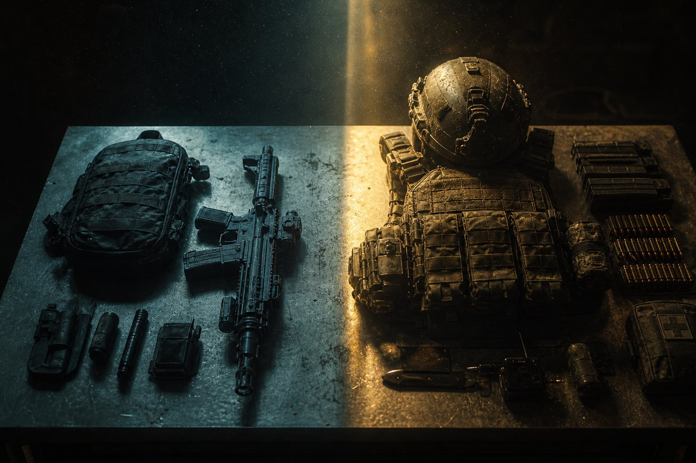
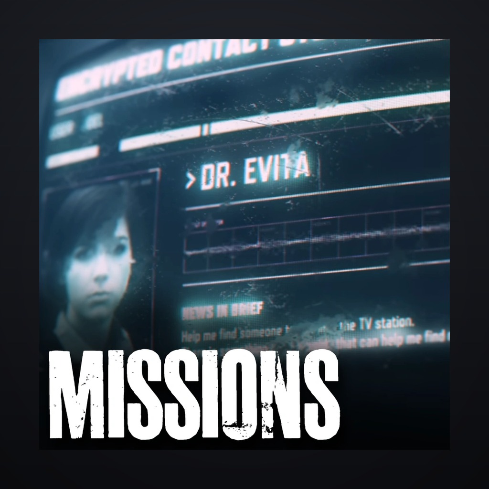
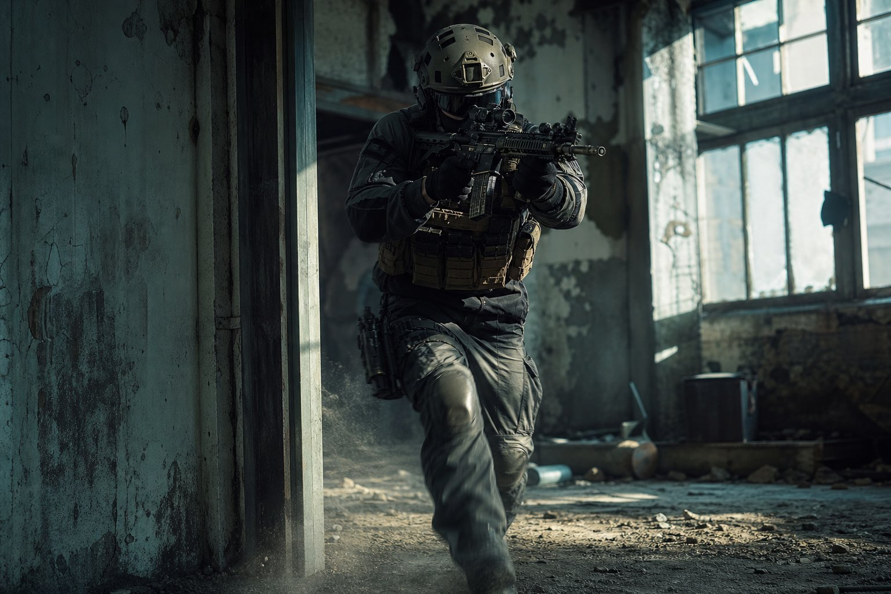
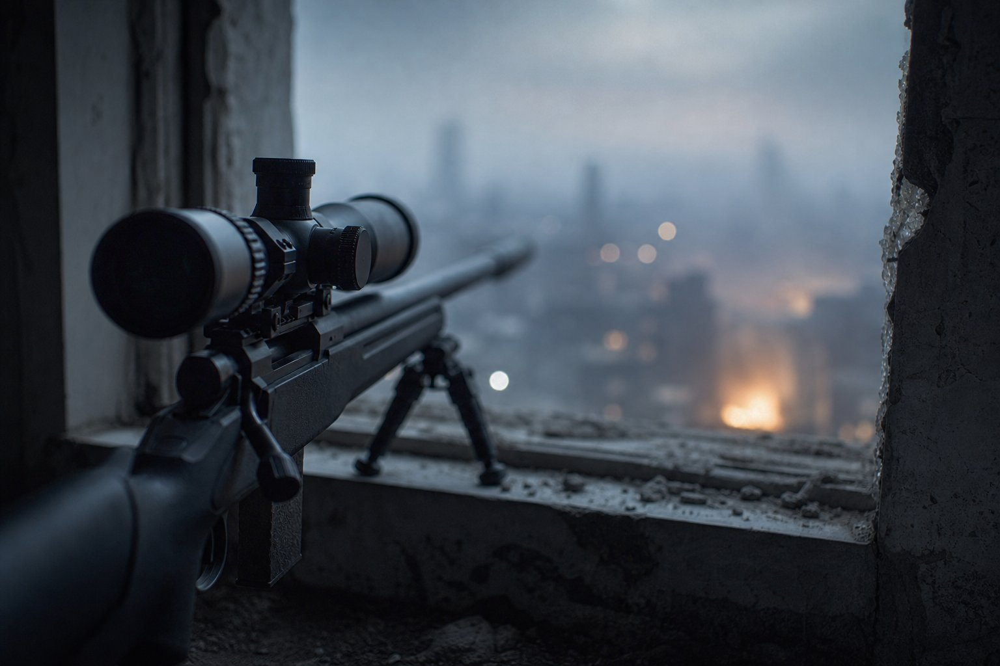
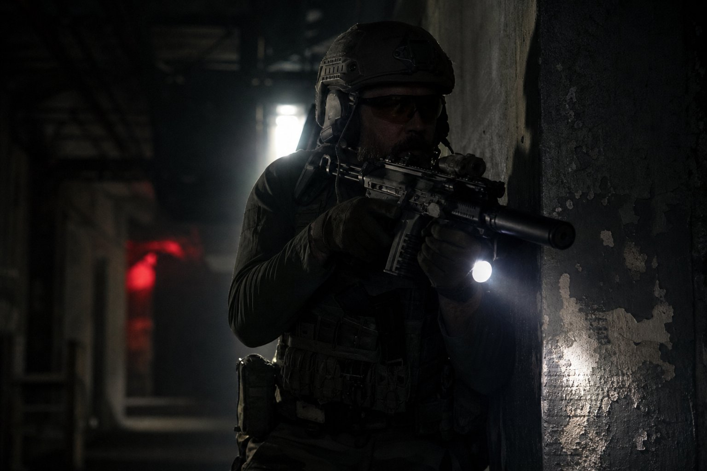
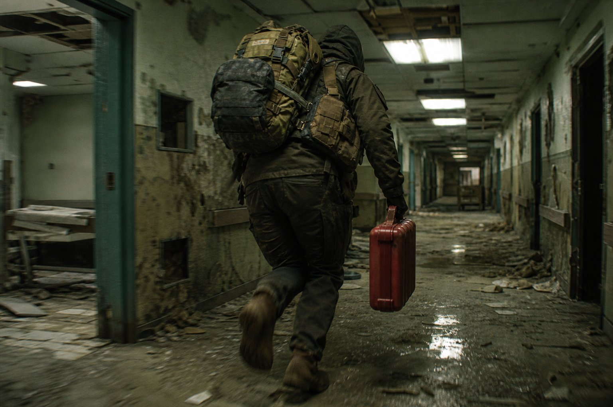
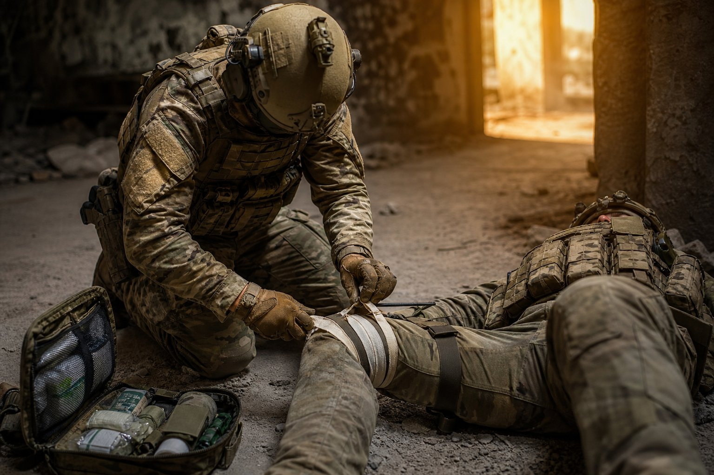

1. Un build est une fonction
Un « build » n'est pas une liste d'objets : c'est une fonction — ce que vous faites pendant les 12 minutes du raid. Chaque objet doit servir cette fonction. Si un slot ne sert pas le rôle, il est de l'argent dans un sac qui ralentit votre course.
| Rôle | Tier | Fonction | Équipement cœur |
|---|---|---|---|
| Assaut | S | Pousser agressivement les zones de loot contestées, combattre à moyenne distance, extraire avec du loot lourd | Fusil d'assaut modifié, gilet T4, casque T3, trousse IFAK |
| Sniper | A | Tenir une position d'overwatch en hauteur, engager à 200 m et +, se relocaliser après chaque tir | SVD / M24, 4×, sidearm, armure T3 (légère), attelles |
| Lointier | A | Sprinter vers les spawns de valeur, remplir les conteneurs, extraire par le point le plus proche | MP5, grand sac, rig multi-slots, clés de salles fermées |
| Team Player | A | Rester avec le squad, soutenir médicalement, partager munitions et soins | M4A1 standard, IFAK supplémentaires, kit chirurgical, attelles, armure T4 |
| Pistol Runner | B | Éviter le PvP, piocher le loot dans les zones calmes, extraire vite avec un conteneur plein | Glock 17 à chargeur étendu, pansements de base, rig à grandes poches |
2. Build Assaut — tier S

| Slot | Choix | Pourquoi |
|---|---|---|
| Primaire | H416 ou A545 | Le recul contrôlable et la portée S7 : ils couvrent le CQB et la moyenne distance |
| Munitions | M855A1 PL 4 (Normal) / M995 PL 5 (Lockdown) | Le PL 4 est le sweet spot ; le PL 5 seulement si votre cible est équipée de classe 5 |
| Gilet | 6B13 T4 (Normal) / 6B43 T5 (Lockdown) | 46 d'ergonomie au T4 : la mobilité vaut plus que 20 points de durabilité |
| Casque | T4 avec visière T4 | En Lockdown, la DK6 (T3) laisse passer toute munition T3 et moins |
| Médical | 100D Battlefield Medkit + 1 kit chirurgical + OPM bandage ×2 | Le saignement et le membre cassé sont les deux causes de mort en push |
| Budget | ~900 000 K en Lockdown | Le kit d'assaut typique de la communauté |
3. Build Sniper — tier A

- Arme : M24 (tier S) pour la portée, M110 + Binary Trigger (tier A) pour le two-shot-per-pull en overwatch, SJ16 (tier A) pour le budget Forbidden.
- Munitions : 7.62×51 M62 (PL 5) en Lockdown, 7.62×54 SNB (PL 6) en Forbidden. Le 7N37 (PL 7) perce la classe 6 de façon constante, mais il est au-dessus du plafond standard : vérifiez son admissibilité en jeu.
- Protection : armure T3 maximum. Le sniper n'a pas besoin d'une classe 5 : il a besoin de vitesse et de silence.
- Technique : choisissez un monument et restez à côté, en bougeant le moins possible tout en gardant une ligne de vue. Ne vous installez pas dessus.
- Ne lootez jamais un kill tant que la zone n'est pas sûre. La tentation est forte, la discipline paie.
- Après le tir : déplacez-vous. Les snipers adverses guettent les positions statiques, et en S7 la portée effective augmentée rend le contre-tir plus probable.
4. Build CQB — tier A

| Slot | Choix | Pourquoi |
|---|---|---|
| Primaire | P90 (S) ou PCC9 + Fully-Automatic Kit (A) | Cadence, maniabilité, vitesse de mise en joue |
| Secondaire | Pistolet 9×19 + dum-dum | Pour les jambes : la « leg meta » est l'option la plus économique du jeu |
| Audio | GS2 (coupe ouverte) | Le son est une information : c'est la principale source de données en CQB |
| Équipement | Stun grenade + smoke | Le stun ouvre, la smoke couvre la traversée |
| Règle | Jamais un sniper en primaire | En TV Station, les lignes de vue sont courtes et les duels se jouent en 2 secondes |
5. Build Lointier — tier A

- Priorité absolue : la valeur par slot. Visez 5 000 Koen par case en Normal, 10 000 en Lockdown, davantage en Forbidden.
- Arme légère : MP5, UMP45 ou USAS-12. Le but n'est pas de tuer, c'est de sortir vite.
- Équipement : grand sac, rig multi-slots, une clé de salle fermée — un coffre ouvre bien plus de valeur qu'un conteneur au sol.
- Sur les bodies : un joueur tué porte souvent un kit T4 ou T5. Vider un corpse vaut mieux que fouiller une armoire.
- Méthode « rat » : entrer quasi nu, seauthentication dans un coin, laisser les autres fights se faire, puis opportunément voler l'équipement des morts. C'est le build le plus rentable en Forbidden pour les joueurs qui n'ont pas le niveau de PvP.
6. Build Team Player / Soutien — tier A

- Arme : RPK-16 (600 RPM, chargeur 60) ou AEK (800 RPM) — la suppressioncontinue est votre métier.
- Médical en double : une trousse supplémentaire pour les coéquipiers. Un STO First Aid Set supplémentaire vaut plus qu'une lunette thermique pour le business du squad.
- Munitions : 180 cartouches minimum, et un second type de calibre dans un slot libre : vous ramassez les balles de vos morts.
- Communication : le volume de la musique baisse automatiquement en multijoueur en S7 : c'est fait pour que vous entendiez vos coéquipiers.
- Réactivité : le kit de soutien n'a pas besoin d'être agressif. Il couvre, il porte, il ramène.
7. Les 5 builds prêts à l'emploi
| Build | Arme | Munition | Usage |
|---|---|---|---|
| Polyvalent | AK-12 | 5.45×39 BS (PL 5) | Le fusil à tout faire, rentable en Koen |
| Assaut | Vector .45 | .45 AP (PL 3) | Assaut lourd : 1 200 RPM et des dégâts de chair à la hauteur |
| Longue distance | M24 | 7.62×51 M80 (PL 4) | Overwatch et headshots : 63 dégâts de chair, classe 4 percée |
| Léger | P90 | 5.7×28mm SS198 | CQB rapide et mobile |
| Anti-armure lourde | Mosin | 7.62×54 SNB (PL 6) | Le setup qui perce la classe 6 de façon fiable |
Chaque build a deux variantes
En S7, le class d'armure est plafonné par la difficulté : chaque build existe donc en version Normal (T4 max) et Lockdown (T5 max). Le build est le même, seul l'équipement change — et c'est exactement ce que calcule l'optimiseur de loadout.
8. Adapter son build au mode
| Mode | Plafond | Déblocage | Ce que vous devez changer |
|---|---|---|---|
| Normal | T4 | Immédiat | Tout le kit doit tenir sous T4 : le stock T5/T6 est de la valeur immobilisée |
| Lockdown | T5 | Niveau 12 | Montez d'un cran en armure et en munitions ; c'est là que se fait l'économie |
| Forbidden | T6 | Niveau 30 | Vérifiez la valeur du kit : 2 000 K+ de gear = une mort à 2 millions |
La règle de la « juiced kit »
Placer un sac à dos et des accessoires dans le rig au lieu du sac réduit la valeur d'entrée du kit et permet d'entrer avec un équipement qui dépasserait la limite — le contournement classique de la limite de valeur. Attention : depuis la mise à jour, on ne peut plus placer de sac à dos dans le rig.
Pour l'outil de construction, voir le Loadout Optimizer. Pour le classement des armes, voir la tier list globale.